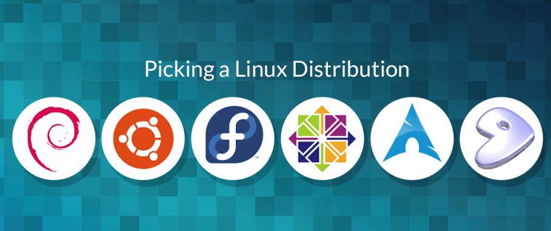
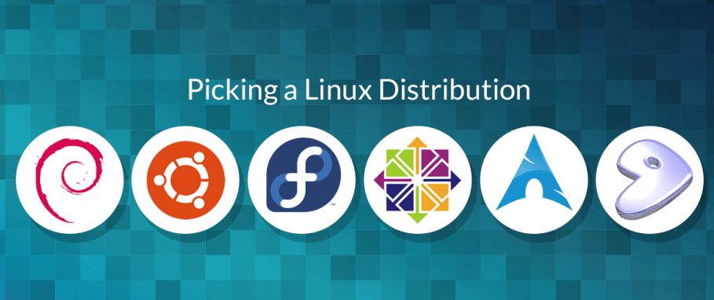
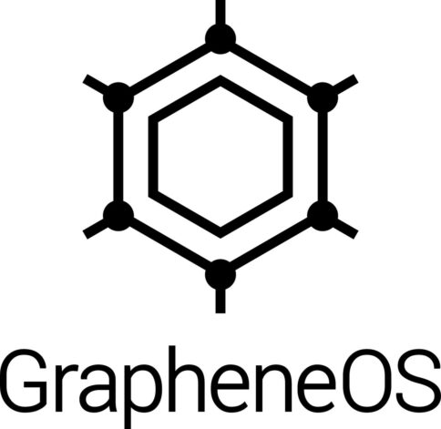
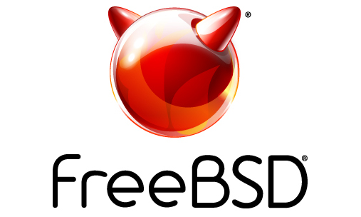
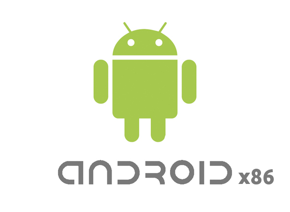

Wat is een OS?
OS staat voor Operating System en bestuurt je hardware. Je hebt veel verschillende OS's: Windows, Linux, MacOS, iOS en BSD. De rest is gewoon gebaseert op een van die OS's. Bijvoorbeeld Android en Chrome OS zijn beide Linux.
Linux (FOSS)
Linux (ook wel GNU/Linux) is een van de veiligste OS (Operation System) voor PC's (personal computers). Linux is de meest populaire OS op de wereld (Android is ook Linux) en is veel veiliger en betrouwbaarder dan Windows of MacOS. Er zijn verschillende Linux versies, ook wel bekent als distrobutions of distros, maar ze werken bijna allemaal precies hetzelfde. Er zijn 3 "main" distros: Red Hat/Fedora, Ubuntu/Debian en Arch. Bijna elke distro ooit is hier op gebaseert. Er zijn ook veel "independent" distros, zoals Void of Gentoo die op niks gebaseert zijn. Chrome OS is dan weer gebaseert op Gentoo; Linux Mint (wat Olav en Tom hebben) is gebaseert op Ubuntu, wat weer gebaseert is op Debian. Je kan Linux ook "dual booten" en dit houdt in dat je op een andere disk of partition linux NAAST een andere OS installeert, bijvoorbeeld Windows.
Arch is onstabiel, oftewel het krijgt heel snel nieuwe programma's (packages). Debian krijgt juist geen tot bijna geen updates en is dus heel stabiel (stable). Dit klinkt als een slecht iets, maar omdat het juist geen updates krijgt breekt het dus ook bijna nooit. Arch daarintegen breekt juist heel snel. Fedora/openSUSE of Void zitten daar precies tussenin. Het krijgt snel updates en packages en is toch erg stabiel.
Linux heeft verschillende "desktop environments", de meest bekende zijn Gnome, KDE Plasma en XFCE. Er zijn er natuurlijk veel meer, zoals LXQt, LXDE, Cinnamon, MATE, Budgie etc. Een desktop environment is hoe je distro eruit ziet. Je kan het op elke distro installeren, dus je moet niet de distro beoordelen op hoe die eruit ziet. Je kan elke distro exact hetzelfde eruit laten zien. Het enige waar je naar moet kijken bij een distro is hoe je het installeert, wat de update cycle is (stable als Debian en Ubuntu, "leadinge edge" als Fedora en openSUSE of rolling release als Arch, Gentoo en Void). Daarnaast telt ook de package manager mee voor het kiezen van je distro. Debian gebruikt apt (advanced packaging tool), Fedora/Red Hat dnf en Arch pacman. Apt is oud en is de langzaamste, terwijl pacman een van de snelste is samen met xbps (Void Linux). Dnf zit daar weer tussenin.
 

GrapheneOS (FOSS)
GrapheneOS is een OS speciaal voor Google Pixels en is veel veiliger om te gebruiken. Je hoeft niet te rooten en de kans dat je je telefoon bricked is bijna 0%.
FreeBSD (FOSS)
FreeBSD is ook een OS en lijkt sterk op Linux. FreeBSDs code is alleen veel schoner en het is normaal gesproken ook veel stabieler. Hardware support is alleen slecht, dus de kans dat dit werkt op jou PC/laptop is erg klein. Daarnaast is het ook meer bedoelt voor servers, omdat het dus veel stabieler is dan Linux. De support van programma's is ook niet al te best (niet veel apps werken zoals op Windows of Linux).
Android-x86 (FOSS)
Android-x86 is een Android OS voor PC's/laptops. Je kan alle apps installeren die je ook gewoon op je telefoon zou kunnen installeren (apk's). Het heeft ook de Google Play Store (of F-Droid en Aurora Store als je dat fijner vindt). Zie ook Bliss OS, een fork van Android-x86. Gebruik geen BlueStacks, Nox of MEmu Android emulators. Ze zijn allemaal onbetrouwbaar en tyfus langzaam. Je kan wel Android Studio gebruiken om een hele android telefoon te runnen in Windows of Linux, maar dit is langzaam en ook niet erg aan te raden.
BalenaEtcher (FOSS), Rufus (FOSS) en Ventoy (FOSS)
BalenaEtcher, Rufus en Ventoy zijn allemaal manieren om een ISO file te flashen naar je USB stick. Dit is nodig om bijvoorbeeld Windows of Linux te installeren.